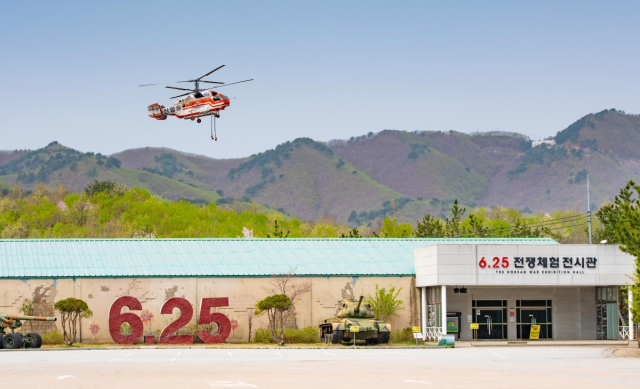

뉴스1
"혹시 베트남 다녀오셨나요?"…여행 갔던 22명 감염된 '이 병', 예방하려면

전 세계 홍역 유행세가 지속되면서 국내 환자 수도 급증하고 있다. 해외 유입 사례가 대부분을 차지해 방역당국이 해외여행객들에게 백신 접종을 강조하고 나섰다.
11일 질병관리청에 따르면 올해 들어 지난 5일까지 국내 홍역 환자는 총 35명으로 집계됐다. 이는 지난해 같은 기간(18명) 대비 94.4% 증가한 수치다.
특히 해외감염 비중이 압도적이다. 전체 환자 35명 중 23명(67.7%)이 해외에서 감염된 것으로 확인됐다. 해외감염자 23명 중 22명은 베트남, 1명은 우즈베키스탄 여행 중 감염됐다. 나머지 12명(34.3%)도 가정이나 의료기관에서 해외 유입 환자와 접촉해 2차 감염된 사례다.
연령대는 19세 이상 성인이 25명(71.4%)으로 주를 이뤘다. 감염자 중 23명(65.7%)은 홍역 백신 접종력이 없거나 확인불가 상태였다.
뉴스2
"어머니, 식사는 잡쉈어?"…고속도로 갓길 걷던 할머니에 비번 경찰이 건넨 말
비번 경찰관이 고속도로 갓길에서 보행 보조기에 지탱해 위태롭게 걷고 있던 80대 노인을 구조한 사연이 전해졌다.
11일 경기남부경찰청에 따르면 지난 2월 24일 가민수(37) 안산단원경찰서 원곡다문화파출소 경위는 영동고속도로 군포IC 진입로 인근 갓길에 급히 차를 세웠다. 차창 너머로 A(80대·여)씨가 보행 보조기를 끌며 갓길을 걸어가고 있는 모습이 포착됐기 때문이다.
위험한 상황임을 직감한 가 경위는 즉시 차량을 안전한 곳에 정차했다. “어디 가시냐”는 물음에 A씨는 “집에 간다”고 답했고, 가 경위는 그 즉시 112에 전화해 지원을 요청한 뒤 A씨 안전을 확보하기 위해 “어머니, 식사는 잡쉈어?”라는 등 일상적 대화를 이어가며 안전지대인 군포TG까지 약 500m를 함께 걸어갔다. 이후 가 경위는 현장에 도착한 경찰 고속도로순찰대가 A씨를 인계한 뒤에야 자리를 떴다. A씨는 순찰차를 이용해 안전히 귀가한 것으로 확인됐다.
경찰 확인 결과, A씨는 발견된 곳에서 2㎞가량(도보 40분) 떨어진 군포 대야미에 거주하고 있던 것으로 파악됐다. 47호선 국도를 따라 귀가하던 A씨는 군포IC 접속도로를 국도로 오인해 길을 잘못 든 것으로 확인됐다. 당시 가 경위는 비번 날 병환 중인 아버지를 뵙고 귀가 중이었던 것으로 전해졌다.
뉴스3
"용산 오피스텔 보증금 100만원, 월세 47만원"…11만명 몰렸다[집슐랭]
서울 전·월세 가격이 치솟으면서 정부가 공급하는 공공 임대주택의 인기가 뜨거워지고 있다. 임대료가 주변 시세의 30~80% 수준으로 저렴한 데다 최장 20년간 안정적으로 거주할 수 있다는 장점 때문으로 풀이된다. 수요가 커지면서 정부도 공공·민간 임대주택 공급을 확대하기 위한 방안 마련에 나섰다.
10일 한국토지주택공사(LH)에 따르면 전날까지 전국에서 무주택 청년·신혼·신생아 가구를 대상으로 매입임대주택(1차) 3093가구에 대한 입주자를 모집한 결과, 총 11만 8796명이 지원했다. 평균 경쟁률은 38대 1에 달한다. 특히 서울은 2023년 54대 1에 불과했지만 지난해 122대 1, 올해는 229대 1까지 치솟은 것으로 집계됐다. 신청자 수도 지난해 4만 6000여 명에서 올해 6만 5000명으로 늘었다
매입임대는 도심 내 교통 접근성이 좋은 연립·다세대, 아파트, 오피스텔 등을 LH가 사들여 공급하는 주택이다. 매년 1~4차로 나눠 공급한다. 유형은 △청년 △신혼·신생아Ⅰ △신혼·신생아Ⅱ 총 3가지다. 청년임대주택의 경우 19~39세 무주택 청년이 지원할 수 있으며, 임대료는 인근 시세의 40~50% 수준이다. 최장 10년까지 거주할 수 있고, 입주 후 혼인할 경우에는 20년까지 계약을 연장할 수 있다. 신혼·신생아는 월세형과 전세형 두 가지로, 소득에 따라 시세의 30~80%만 임대료로 내면 된다.
서울 송파구 석촌동의 A 도시형생활주택은 총 1가구 모집에 1250명이 몰렸다. 전용면적 39㎡의 월 임대료(보증금 100만 원)는 68만 원 수준이다. 용산구 내 B 오피스텔 1가구 모집에도 1250명이 신청했다. 전용 24㎡ 규모로, 월 임대료(보증 100만 원)가 47만 원으로 주변 시세보다 저렴하다.
뉴스4
"이게 사람이 할 짓인가"…훈련사들도 분노한 '어둠의 개통령' 결국
반려견 훈육을 명목으로 강아지를 목줄에 매달거나 발로 차는 등 학대 행위를 한 유튜버 A씨가 벌금형 구약식 처분을 받았다.
11일 동물자유연대에 따르면 수원지방검찰청은 최근 A씨에게 동물보호법 위반으로 벌금형을 선고하는 구약식 처분을 내렸다.
구약식 처분은 검찰이 혐의는 인정되나 정식 재판까지 필요하지 않다고 판단할 경우, 법원에 정식 공판 없이 벌금형을 청구하는 절차다. 법원이 이를 받아들이면 피의자에게 벌금형이 내려지며 이는 전과로 기록된다.
A씨가 이 처분에 불복할 경우 약식명령 통지를 받은 날로부터 7일 이내에 정식 재판을 청구할 수 있다.
뉴스5
합참 “고성 DMZ 원인미상 산불…北에 안내방송”
고성 비무장지대(DMZ) 일원에서 원인 불명의 산불이 발생했다.
11일 합참에 따르면 전날 오후 4시30분께 발생한 산불에 대해 오전 6시 30분부터 산림청 헬기 2대를 투입해 진화 중이다.
합참은 “우리 군은 산림청 헬기 투입 전 북측에 대북 안내 방송을 했다. 현재까지 우리 인원과 시설물 피해는 없으며, 군사분계선(MDL) 이남 산불 진화는 순조롭게 이뤄지고 있다”고 밝혔다.
이어 “북한의 동향을 예의주시하며 대비 태세를 유지하고 있다”고 덧붙였다.